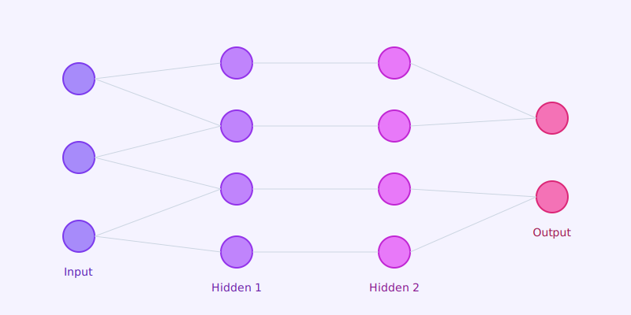

Unlocking the power of multi-layered neural networks to solve complex problems.
Deep Learning is a specialized subset of Machine Learning inspired by the structure of the human brain. It uses multi-layered artificial neural networks to learn from vast amounts of data.
CNNs are designed to process structured grid data, such as images. They use convolutional layers to automatically detect features like edges, textures, and shapes, making them ideal for computer vision.
RNNs are designed for sequential data, such as time series or natural language. They have a "memory" that captures information about what has been calculated so far.
Transformers have revolutionized NLP. They use self-attention mechanisms to weigh the significance of different parts of the input data, allowing for parallel processing and handling long-range dependencies.
GANs consist of two networks—a generator and a discriminator—competing against each other. They are used to generate realistic synthetic data, such as images, music, and text.
The core algorithm for training neural networks. It calculates the gradient of the loss function with respect to the weights, allowing the network to update its parameters and minimize error.